的次数不大于 5 且系数取自
的所有多项式。下面是一些例子：
的次数不大于 5 且系数取自
的所有多项式。下面是一些例子：向量 这个概念的历史相当混乱，我将在下文尽量把它厘清。本部分介绍的知识完全采用现代处理方式，事后看来，这里使用的想法和术语是在 1920 年左右开始流行起来的。
※※※
向量空间 是一个数学对象的名称。这个对象有两类要素：向量 和标量 。标量属于我们熟悉的某个数系，其中有加法、减法、乘法和除法，比如实数系 。向量稍微有点儿复杂。
我们一起来看向量空间的一个简单例子：一个无限平面。我选择这个平面上的一个特定点，并称之为原点 。一个向量是从原点到另一个点的有向线段。图 VS-1 给出了一些向量。可见，向量的两个特点是它的长度 和方向 。
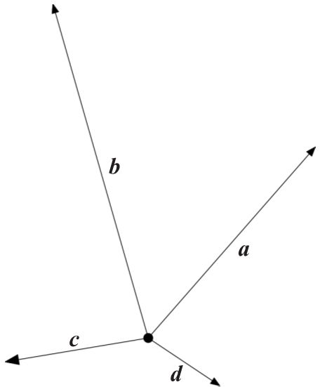
图 VS-1 一些向量
向量空间中的每一个向量都有一个相反向量。这个相反向量是与这个向量长度相同，但方向相反 的有向线段（图 VS-2）。原点自身可以被看作一个向量，称为零向量 。
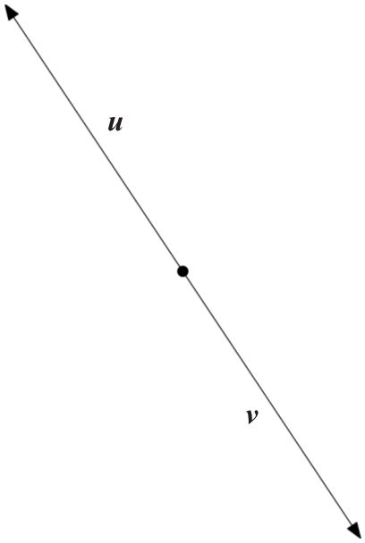
图 VS-2 相反向量
任意两个向量可以相加。为了将两个向量相加，我们把它们看成一个平行四边形的两条邻边，然后画出这个平行四边形的另外两条边，这个平行四边形的从原点出发的对角线就是这两个向量的和（图 VS-3）。
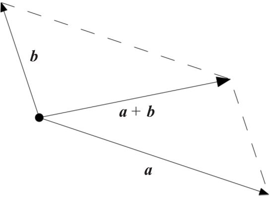
图 VS-3 向量相加
如果把一个向量和零向量相加，结果还是原来的向量；如果把一个向量和它的相反向量相加，结果是零向量。
任意向量都可以与一个标量相乘，这使得向量的长度发生相应的变化（例如，如果标量是 2，那么相乘之后的向量的长度加倍），但是它的方向不变；如果所乘的标量是一个负数，那么得到的向量的方向与原来恰好相反。
※※※
关于向量空间的内容差不多就这些。当然，这里给出的平面向量空间只是一个例子。向量空间中还有更多东西，我稍后会介绍。不过，我暂时还是先用前面的例子。
向量空间理论中的一个重要思想是线性相关 。在向量空间中任意取出一组向量，比如说
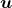
、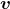
、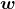
……如果能找到一组不全为零的标量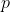
、 、
、 ……使得
……使得
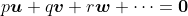
（即零向量）那么就称向量
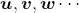
是线性相关 的。例如图 VS-4 中的两个向量 和 ， 的方向与 相反， 的长度是 的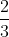
，于是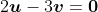
，所以 和 是线性相关的。还有另一种表示线性相关的方法：你可以用其他向量表示其中的一个向量，如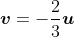
。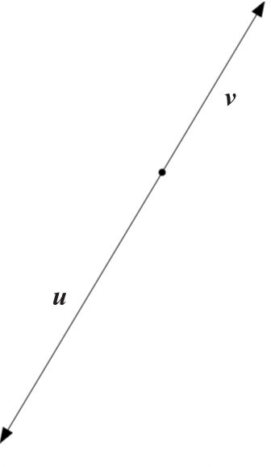
图 VS-4 线性相关
现在我们观察图 VS-5 中的向量 和 。这时，这两个向量不是线性相关的。我们不可能找到不全为零的标量
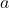
和 ，使得
，使得 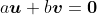
。（有一个说服你自己的好办法：因为 和
不能全为零，所以你可以用其中一个不为 0 的数去除这个表达式，比如用非零数
去除，于是这个表达式可以变成 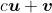
。现在想象一下向量 和 相加的图形，正如图 VS-3 中的平行四边形和对角线。保持 不变，通过变动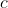
的可能值，我们可以任意改变向量 的大小，既可以把它变大或变小，也可以把它变成零或负的——当 是负数时，得到的向量方向是相反的——然后观察对角线的变化，它永远不等于零 。）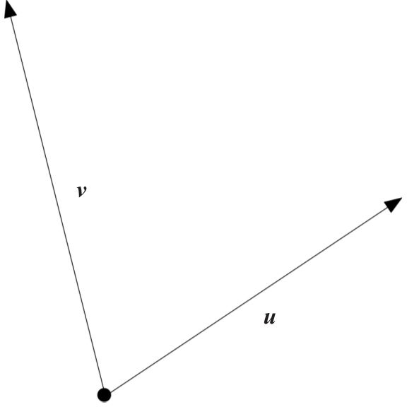
图 VS-5 线性无关
因此，图 VS-5 中的向量 和 不是线性相关的，它们是线性无关 的，我们不能用其中一个向量表示另一个向量。而在图 VS-4 中，我们可以 用其中某个向量表示另一个向量： 。有了线性无关向量组的概念，我们就可以定义向量空间的维数 。它就是在这个空间中能找到的线性无关向量的最大个数。在上面的向量空间的例子中，我们可以找到很多组线性无关的两个向量的例子，如图 VS-5 中的两个向量；但是我们找不到三个线性无关的向量。图 VS-6 中的向量 可以用向量 和 表示，事实上是
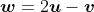
。换一种方式就是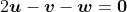
。向量 、 、 是线性相关的。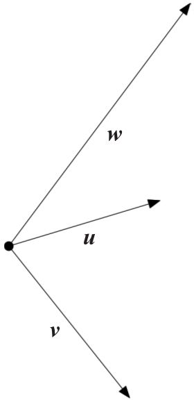
图 VS-6
因为在上面的例子中，能够找到的线性无关向量的最大个数是 2，所以这个空间的维数是 2。我想你不会对这个结果感到惊讶。
在类似这样的二维向量空间中，如果两个向量是线性无关的，那么它们就不会共线。在一个三维空间中，如果三个向量是线性无关的，那么它们就不会共面。反之，共面（在同一个二维 空间中）的三个 向量一定是线性相关的，共线的两个 向量（即一维空间的两个向量）一定是线性相关的。同一个三维 空间中的任意四个 向量是线性相关的……以此类推。
给定两个线性无关的向量，如图 VS-5 和图 VS-6 中的向量 和 ，例子中的向量空间中的任意其他向量都可以用它们表示，就像前面用 和 表示 那样。这说明这两个向量是该空间的一组基 。任意两个线性无关的向量都可以作为一组基，这个空间中的任意其他向量都可以用它们来表示。
维数 和基 是向量空间理论的基本术语。
※※※
向量空间这个概念是纯代数的，不需要任何几何表示。
考虑未知量
的次数不大于 5 且系数取自
的所有多项式。下面是一些例子：
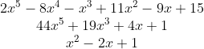
这些多项式就是向量，标量是 ，这是一个向量空间，我可以把两个向量加起来得到另一个向量：
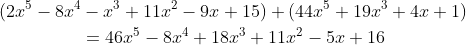
每一个向量都有相反向量（即改变系数的符号）。实数 0 可被看作零向量。当然，我还能把一个向量与一个标量相乘：
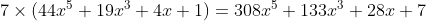
这些做法都成立。很显然，
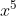
、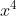
、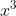
、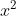
、
和 1 这六个向量是这个空间的一组基。这些向量是线性无关的，因为只有当
、
、
、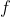
、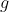
、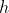
全都是 0 时，对于未知量
的任意
值，以下等式（等号右边为零多项式）才成立：
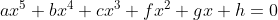
因为这个空间中的其他任意向量都可以用这六个向量来表示，而且不存在 7 个或更多的线性无关的向量，所以这个空间的维数是 6。
你也许会抱怨，说我没有对这些多项式进行任何重要的操作，比方说我没有做因式分解，
的幂只是用来占位而已。在这里，我的操作对象就是其系数组成的六元组。于是，我不就可以忽略
，把例子中的三个多项式写成下面的六元组吗？
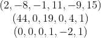
接下来，如果用显明的方式定义六元组的加法：
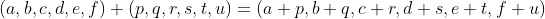
以及标量乘法：
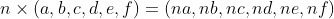
那么在某种意义上，这不就是与多项式向量空间相同的向量空间吗？
是的。数学对象“向量空间”只是一种工具和一种抽象。我们可以选择不同的方式来表示它，例如用几何方式或多项式形式，以便让我们对用它处理的特定任务有更深刻的见解。但事实上， 上的每一个 六维向量空间本质上都与上面给出的带有向量加法和标量乘法的实数六元组组成的向量空间相同（数学家们称之为“同构”）。
※※※
尽管向量空间本身并不那么令人兴奋，但是当我们研究它们之间的关系 或者在基本模型上添加一些新特性 来增强它们时，它们会
产生更强大、更迷人的结果。其中第一个主题就是线性变换 ——从一个向量空间到另一个向量空间的可能映射，根据某些确定的规则，把第二个向量空间的一个向量指定给第一个向量空间中的一个向量。术语“线性”的意思就是这些映射有很好的特性，例如，如果向量 映射到向量
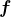
，向量 映射到向量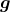
，那么这就能保证向量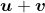
映射到向量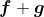
。如果你想象把一个高维向量空间映射到一个低维向量空间，那么你就能明白我所说的意思，这叫作“投影”。反之，低维向量空间也可以映射到高维向量空间，这叫作“嵌入”。我们还能把一个向量空间映射到它自身，或者其自身的一个较低维的子空间。
像
或者
这样的数域就是其自身的一维向量空间（你可以暂停片刻，说服自己这是对的），你甚至可以把一个向量空间映射到它自己的标量域，这种映射被称为线性函数
。使用之前的多项式向量空间可以得到一个例子，具体做法是在每一个多项式中用某个固定的数替换
，例如
等于 3。这样做就把每一个多项式线性地变成一个数。令人惊讶的是（我总是感到惊讶），一个空间上的所有线性函数组成的集合形成一个向量空间，其中的向量是线性函数。这个向量空间是原来向量空间的对偶
空间，与原来的空间具有相同的维数。为什么要止步于此呢？为什么不把向量对
映射到基域上，使得任意向量对
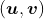
映射到一个标量呢？这样，我们就得到了力学专业和量子物理专业的学生们熟悉的概念：内积 （或标量积 ）。我们甚至能把向量三元组、四元组、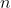
元组映射到标量，这样就进入了张量、格拉斯曼代数以及行列式理论的领域。虽然向量空间本身是一个简单的东西，但它为我们打开了数学奇迹的宝库。※※※
我对于向量空间之间的关系就讲这么多。添加新特性又是什么呢？如果向这个基本模型添加一些新特性，让向量空间略微增强，那么我们能得出什么理论呢？
最常见的附加性质是将向量相乘的某种方式 。回想一下，在向量空间的基本定义中，标量形成一个包含加、减、乘、除四则运算的域。然而，向量只能进行加法和减法运算。标量可以与向量相乘，但向量之间不能进行乘法运算。一个增强向量空间的显而易见的方式就是添加某种一致且有用的向量乘法：两个向量相乘，得到另一个向量。
具有这种附加特性的向量空间称为一个代数 ，即在这个向量空间中，两个向量不仅可以相加，而且还可以相乘得到另一个向量。
我承认这不是一个很好的叫法。“代数”一词已经有了一个完美的含义，这就是本书所讨论的主题。为什么要把一个不定冠词放在“代数”一词的前面，并用它给这个新数学对象命名，混淆我们所讨论的主题呢？然而，抱怨是没有用的，如今，这种叫法已经被广泛接受了。如果你听到某个数学对象被称为“一个代数”，那么你几乎可以肯定这是一个向量空间，其中的向量可以进行某种乘法运算。
“代数”的最简单的例子就是复数空间
，它并不平凡。回想一下，我们可以这样形象地描述复数：把它们放置在一个无限平面上，实数部分就是横坐标，虚数部分就是纵坐标（图 NP-4）。这意味着复数
可以被看成一个二维向量空间。一个复数就是一个向量，标量域就是
；0 是零向量（即 0+0i），一个复数  的相反数就是
的相反数就是
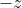
，数 1 和 i 完美地组成这个空间的一组基。这是一个向量空间，并且有这样的附加特性 ：两个向量，也就是两个复数可以相乘得到另一个复数。所以， 不只是一个向量空间，它还是一个代数。把一个向量空间转变成一个代数不是一件容易的事，就像第 8 章的主角威廉·哈密顿爵士（1805—1865）所研究的那样。例如，我在前文中介绍的六维多项式空间在通常的多项式乘法之下不能构成一个代数。这就是为什么有用的代数往往都有名字：它们很稀有。为了构造一个代数，人们必须放弃某些法则，在大多数情况下需要放弃交换律，即
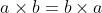
；有时还会放弃结合律，即 。
。
除了乘法运算以外，如果你还想对向量进行除法 运算，那么你就必须继续限制你的选择。除非你放弃结合律，或者允许向量空间的维数无限 ，或者允许标量是比普通数奇怪得多的东西，否则这些选项就只剩下 、 以及四元数体。
我终于说到四元数了！威廉·哈密顿爵士马上登场！